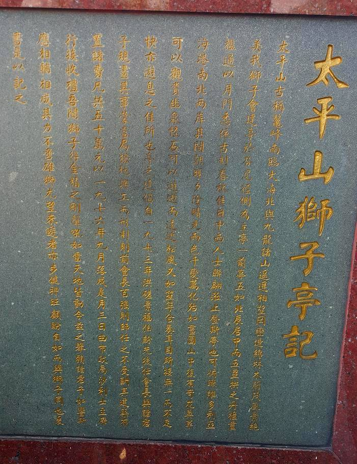

《太平山獅子亭記》
"Record of the Lion's Pavilion, Victoria Peak"
Source:
lit/lion-pavilion.cmd
First created: 2019-04-07
Last modified: 2021-02-08
This is a semi-literary text on a plaque in the Lion's Pavilion,
Victoria Peak, Hong Kong.
Unfortunately I did not photograph the left half of the plaque.
From memory it contained a list of names of contributors to the funding
(referred to in the text as 諸君子, "all the gentlemen"),
but no mention of the author.

High-resolution version: lion-pavilion.jpg (1.6 MB)
Translation
The inserted punctuation is my own.
《太平山獅子亭記》
"Record of the Lion's Pavilion, Victoria Peak"
太平山，古稱鼇峰，南臨大海，北與九龍諸山遥遥相望，岡巒連綿，林木蔚茂，風景絶美。
Victoria Peak, in antiquity referred to as
the Peak of the Great Sea-Turtle,
overlooketh southward the great sea,
and distantly looketh northward at each other
with all the mountains of Kowloon;
its ridge hills connected and unbroken,
its forest trees luxuriant and flourishing,
and its scenic views absolutely beautiful.
- 太平山： Victoria Peak； lit. Mount Tranquility; or Mount Peace
我獅子會，建亭於芬尼徑側，為主亭一，前亭五，如北辰居中，而五星拱之。
We the Lions Club, built the Pavilion
to the side of Findlay Path,
being main pavilion one, and fore pavilions five,
like the North Star abiding in the centre,
with the Five Planets going round it.
- 居： abiding in; or dwelling in
- 五星： the Five Planets
金木水火土, i.e. Venus, Jupiter, Mercury, Mars, and Saturn.
- 拱： going round
The line 如北辰居中，而五星拱之 is a nod to Confucius
in 《論語・為政》:
子曰：為政以德，譬如北辰，居其所而眾星共之。
The Master saith,
He who governeth with virtue,
is likened unto the North Star, abiding in its place with
the multitude of stars going round it.
Here, 共 is interchangeable with 拱.
丹楹畫檻，通以月門，悉依古制。
With red-painted columns and drawing-decorated balustrades,
through to the Moon Gate,
all were made according unto the olden.
春秋佳日，中西人士聨翩蒞止，登斯亭也。
On a good spring or autumn day,
both Chinese and Western people continuously flock here to attend,
ascending this Pavilion.
- 聨翩：翩，疾飛也； continuously flock; lit. rapidly fly together
翩，音篇， Cantonese: p'een1, Mandarin: piān
"Flock" preserves the connotation with bird flight.
可俯瞰維多利亞海港南北两岸，其間朝暉夕陰，晴光雨色，千變萬化，殆如畫圖。
One can look down and overlook the two banks,
southern and northern, of Victoria Harbour:
between them the morning sunshine and the even darkness,
and the clear light and the rainy hues,
undergo a thousand changes and a myriad tranformations,
as in paintings and drawings.
- 瞰：視也；又俯視曰瞰； overlook; or look at
瞰，音磡， Cantonese: ham3, Mandarin: kàn
- 晴： clear; or fine
- 殆
Speech-assist I think.
山中復有竒花異草可以觀賞，幽泉怪石可以遊遨。
Amidst the mountain there are also odd flowers and strange grasses
one can see and appreciate,
and secluded springs and strange rocks
one can tour and roam.
- 賞： appreciate; or admire
- 遨： roam; or ramble
而遠近松風，又如笙竽合奏，耳目所接，無一而不足快。亦遊息之佳所也。
And the far and nearby pine-tree wind,
is also like the shêng 笙 and the yü 竽
playing in ensemble;
among that which the ear and the eye receiveth,
not one thing is not sufficient to please.
It is also a good place for
travel and rest.
亭之建，倡自一九七三年。
The construction of the Pavilion,
was advocated for since the year 1973.
洪磋景、福伯齡，先後任會長，與諸君子規畫其事，蒙當局撥地興工。
Hung Ts'or-king 洪磋景, and Fook Pak-ling 福伯齡,
served as Club Chairman one after the other,
and planned those matters with the many gentlemen,
and received from the local authority
an allocation of land with which to begin work.
- 先後： one after the other; lit. before and after
而形制則前會長百强則師，任之不受酬。其建築布置諸費，凡共五十萬元。
And of designing the form and structure,
the former Club Chairman Pak-k'eung 百强 the architect
served it not receiving payment.
Its various construction and arrangement costs,
altogether totalled five hundred thousand dollars.
- 百强： Pak-k'eung
The name of the architect.
According to a separate plaque
his full name is Ch'an Pak-k'eung 陳百强.
I have no idea why he is referred to by first name only.
Note that he shares the same full name with Danny Chan (1958–1993).
- 則師： architect
The use of 則 to mean architectural drawing, as in 圖則,
appears to be local to Hong Kong.
And in this context it is pronounced tsik7, not tsak7,
although I have yet to come across a dictionary which
lists this pronunciation.
以一九七六年九月落成，是月三日，由市政局沙利士主席行接收禮。
It was completed in September of the year 1976,
and on the 3rd day of this month,
the ceremony of receiving was performed by
Chairman Sales of the Urban Council.
- 市政局：
Urban Council;
lit. City Administration Department
Disbanded post 1997,
in favour of new bodies appointed by the government
rather than elected by citizens.
- 沙利士： Sales
Arnaldo de Oliveira Sales.
吾聞獅子得金精之剛，聲吼如雷，天地皆動。
I hear that the lion getteth
the strength of the essence of metal;
its sounds and roars are like thunder:
all Heaven and Earth are moved by it.
- 金精： the essence of metal
Perhaps "essence of the west",
since metal (金) is the element associated with
the cardinal direction west.
- 剛： strength; or toughness
今兹之舉，賴諸君子如響斯應，相輔相成，其力不啻雄獅。
This deed here and now,
dependeth upon the many gentlemen
having as quickly as an echo responded,
mutually assisting and mutually fulfilling,
their efforts no less than the mighty lion's.
- 舉： deed; or commendable action
- 力： efforts; lit. strength
- 啻： less than; lit. only; or merely
啻，音翅， Cantonese: ch'ee3 (post-merger: ts'ee3), Mandarin: chì
尤望來遊者，亦步健神旺，顧盼自如，而與獅子同也。
I especially hope for the traveller who cometh,
to also have a robust step and an energetic spirit,
looking back and looking forward
according unto his own will,
and be the same as a lion.
- 望： hope; or wish
- 神： spirit; or mind
爰書，是以記之。
A prisoner's writing: this to record it.
- 爰書： a prisoner's writing; lit. changed writing
An affidavit given by a prisoner, the term supposedly
derived from the text of the affidavit being changed: 爰，易也，換也。
Here the author of the plaque text closes by self-deprecating his own work.
Cite this page
Text
Conway (2021).
"Record of [the] Lion's Pavilion, Victoria Peak".
<https://yawnoc.github.io/lit/lion-pavilion>
Accessed yyyy-mm-dd.
BibTeX
@misc{conway-lion-pavilion,
author = {Conway},
year = {2021},
title = {``{Record} of [the] {Lion's} {Pavilion}, {Victoria}~{Peak}''},
howpublished = {\url{https://yawnoc.github.io/lit/lion-pavilion}},
note = {Accessed~yyyy-mm-dd},
}
BibLaTeX
@online{conway-lion-pavilion,
author = {Conway},
year = {2021},
title = {``{Record} of [the] {Lion's} {Pavilion}, {Victoria}~{Peak}''},
url = {https://yawnoc.github.io/lit/lion-pavilion},
urldate = {yyyy-mm-dd},
}
{kind=link}
{kind=link}